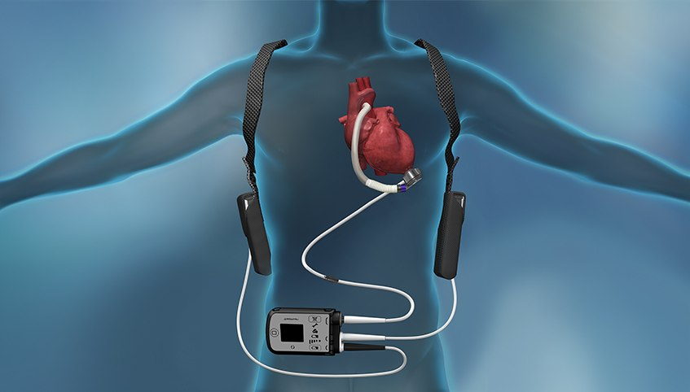
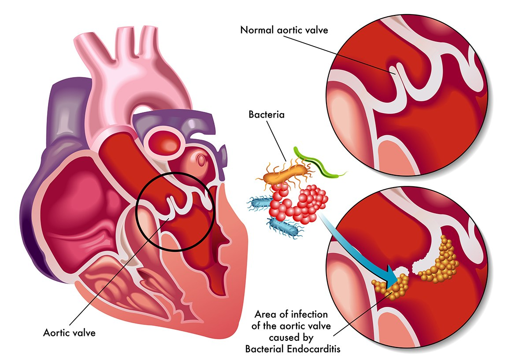
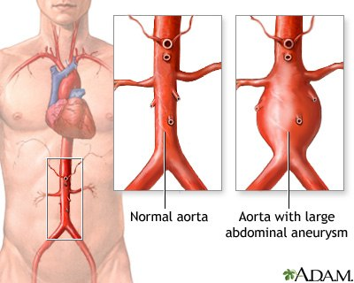
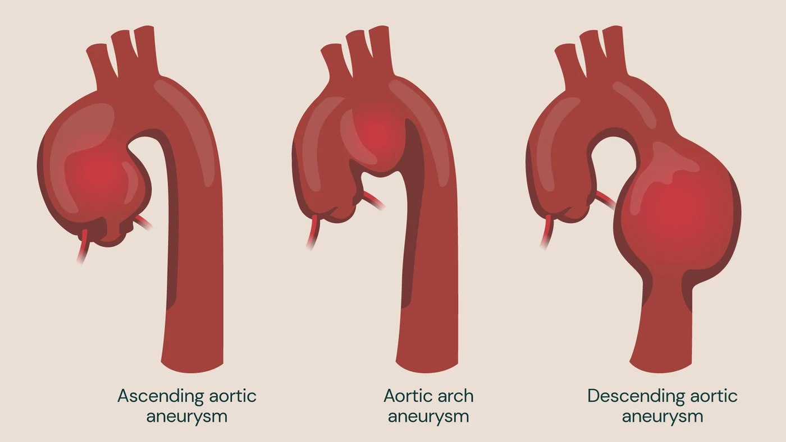
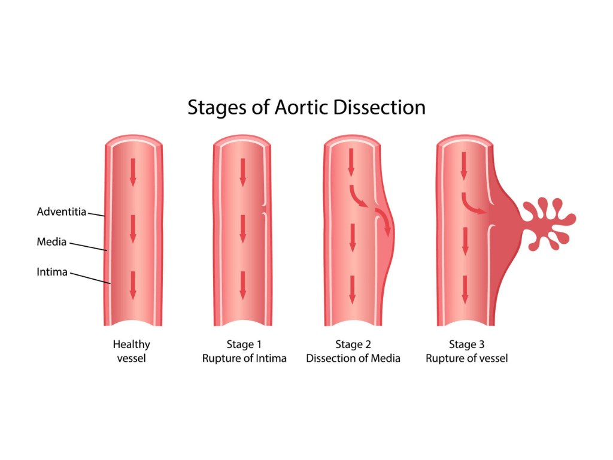
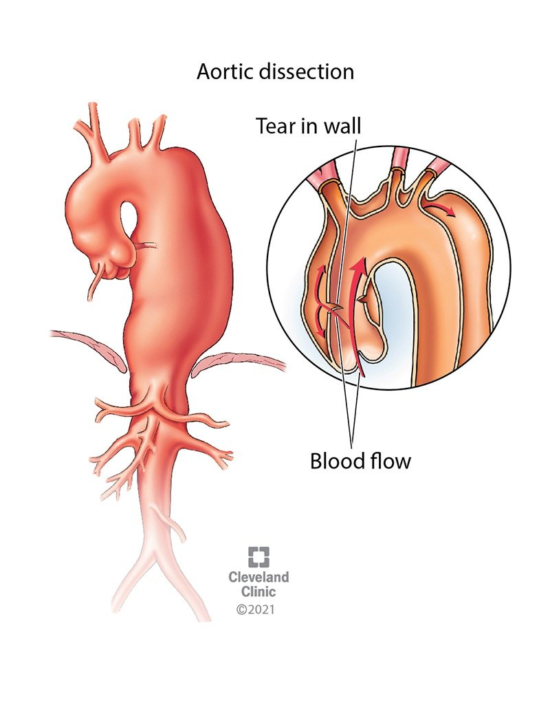

Day 2 · Topic 1
Cardiovascular Critical Care Issues
Things to Bring Forward
Earlier Content This Topic Builds On
- Normal function of the heart: what the heart is responsible for. What low cardiac output means, and what it looks like.
- Hypertension, hyperlipidemia, atherosclerosis: what each means, and why it matters.
- Coronary artery disease (CAD), and STEMI and NSTEMI care: what is going on in CAD, its risk factors, why it matters so much, and how atherosclerosis relates to it.
- Heart failure: chronic heart failure, left-sided versus right-sided.
- Valve disease: the valve disorders from earlier classes.
- Cardiac rhythm abnormalities: basic rhythm identification.
- Pharmacology for heart failure, CAD and hypertension: the drug matrices. What beta blockers, calcium channel blockers and digoxin do.
- Cardiovascular diagnostics: what an echo and a TEE (transesophageal echo) each show, and why one over the other. The labs: troponin, BMP, and the electrolytes that matter in cardiovascular disease.
- Post-cardiac cath care: checking the access site and the perfusion in the hand.
- Pleural chest tubes: the chest tubes that sit around the lungs.
Acute Coronary Syndrome (ACS)
From Atherosclerosis to an MI
Endothelial Injury
Atherosclerosis is an inflammatory disease. The lining of the vessels is damaged.
Fatty Plaques
Fatty plaques and complex lesions form in the vessels. Related to hypertension, smoking, diabetes and hyperlipidemia.
Plaque Rupture
A ruptured plaque interacts with the blood and can cause a thrombus.
Coronary Artery Occluded
Chest pain or an MI, depending on how big the occlusion is, where it is, and whether collateral circulation surrounds it.
What ACS Is
- The acute version of CAD. CAD can lead to ACS: the patients coming to the hospital with chest pain, usually related to CAD.
- A problem with myocardial oxygen supply and demand. A plaque or thrombus blocks a coronary artery. The area distal to it gets no oxygen or nutrients and starts dying: ischemia of the myocardium.
- Decrease demand: rest, which is why stable angina resolves. Increase supply: a vasodilator opens the coronary vessels, giving blood more space around the plaque. Ultimately the blockage usually needs fixing.
- Collateral circulation: sometimes very effective and sometimes not, depending on where it is trying to feed. Not everyone has it.
- An acute MI falls under ACS. Classification is no longer based on EKG changes. STEMI versus NSTEMI is still heard, but is becoming antiquated.
Stable Angina
- Relieved with rest.
- Associated with CAD, but not as concerning as unstable.
- Example: chest pain while mowing the yard that resolves after sitting down for a few minutes.
Unstable Angina
- Does not resolve with rest. Can respond to nitrates. Ends up in the ED.
- Increased risk of an acute MI.
- Usually gets a cardiac cath, to evaluate the CAD and whether it needs an intervention.
Complications of ACS
- Dysrhythmias: very common. Dying cells include those that conduct the heart's electrical impulses.
- Heart failure: as more cells die.
- Cardiogenic shock.
- Thromboembolism, rupture of a portion of the heart, pericarditis: much more common with a true acute MI than with ACS alone.
Treatment Goals for ACS
- Establish reperfusion: remove or bypass the plaque, or place a stent.
- Reduce infarct size.
- Prevent and treat complications: heart failure, dysrhythmias, cardiogenic shock.
- Provide support and education.
Immediate Treatment of an MI
| Drug | Why It Is Given |
|---|---|
| Morphine | Reduces pain and anxiety. A vasodilator. Reduces heart workload by reducing preload and afterload, so reduces myocardial oxygen demand. |
| Oxygen | Improves oxygenation of the ischemic heart tissue, so improves myocardial oxygen supply. 2 to 4 L/min by nasal cannula. |
| Nitroglycerin | Sublingual, for ACS, MI and angina. A potent vasodilator: opens the coronary arteries to get blood flow around the blockage. |
| Aspirin | Antiplatelet: decreases platelet aggregation around the clot. Inhibits COX-1, so no TXA2 forms. Chewed: a baby aspirin or a 325 mg aspirin. |
| Thrombolytics | Given to some MI patients, such as tPA. Dissolve the thrombus and minimize the size of the infarct. |
| Anticoagulants | Given to some MI patients, to keep the clot from getting bigger and blocking the coronary arteries. An IV heparin drip is very common. |
| Sedatives | Generally diazepam. Rests a patient made very anxious by the MI, and reduces oxygen demand on the heart. |
Interventions for ACS: Cardiac Cath and CABG
Cardiac Cath (Left-Sided)
- What it is: where almost every MI goes first. Visualizes the coronary arteries to see the blockage. Through the radial or femoral artery, now almost always radial, for an easier recovery.
- Chosen when: vessels are partly occluded, even several, such as 70 to 90%. A stent pushes the fatty plaque against the vessel wall. Balloon angioplasty is less common now that stents are so effective.
- Bleeding: high risk at the site. Pressure goes on the artery, often from a device that slowly releases air. Check that the hand is still perfused.
- Rhythm issues: the heart was irritated and is already ischemic: a perfect storm. On tele, watched very closely.
- AKI: contrast dye is nephrotoxic. Watch urine output, BUN and creatinine.
- Overall: very safe.
- Teaching: stents need long-term anticoagulation, such as apixaban or warfarin, so blood flows freely through them.
Bypass Surgery (CABG)
- What it is: coronary artery bypass grafting. Open heart surgery: the sternum is opened. A graft from the saphenous vein of the leg or the internal mammary artery is attached before the blockage and distal to it. Minimally invasive CABG exists, but is not frequent.
- Chosen when: the disease is too severe to stent, such as two or three vessels 100% occluded.
- Bleeding: high risk. Blood must be very thin to go on bypass. Bleeding from the anastomosis sites and the chest wall. Chest tubes are monitored closely.
- Rhythm issues: high risk. The heart was handled and has had an MI. AFib and PVCs are very common. Continuous tele, one nurse to one patient.
- Also at risk for: acute heart failure, pericarditis, pericardial effusion, cardiac tamponade.
- Overall: very invasive and painful, and very successful. Most complications come from the surgery itself, opening the chest and going on bypass, not from the grafts.
Post-cath care of the access site and the limb is taught in the Cardiovascular review
Post-Op Cardiac Surgery Considerations
| Consideration | What to Know |
|---|---|
| Chest tubes |
|
| Temporary pacers |
|
| Hypotension and hypovolemia |
|
| Invasive lines |
|
| Hemodynamic monitoring |
|
| Labs |
|
| Urine output |
|
| Pain |
|
| Extubation and respiratory management |
|
| Wound management |
|
Temporary pacers and pacer wires are taught in Rhythms & Pacemaker Review
Cardiac Tamponade
Most common after a CABG or any open heart surgery. Also seen after a cardiac cath.
Signs After Cardiac Surgery
- Hypotension and tachycardia: hard to see after surgery, when some of both is expected. Did it happen suddenly?
- Abrupt stop in chest tube output, with the blood pressure dropping.
- Muffled heart sounds: as if through a wall or through water. They can stop being heard at all.
- JVD can occur.
- H&H drop with no obvious sign of bleeding. H&H is trended every 1 to 2 hours after cardiac surgery.
- Example: steady chest tube output, then none for the past hour. Or a hemoglobin of 14, then suddenly 10, with no big dump from the chest tubes.
Signs Without Cardiac Surgery
- Chest pain, dyspnea, fainting or lightheadedness, anxiety, restlessness.
- These tell little after cardiac surgery: sedation, intubation, and chest pain and dyspnea from the surgery hide them.
Pericardial Effusion
- Pericardial fluid builds up slowly over time.
- The pericardium stretches out to hold bigger volumes of fluid without compressing the heart.
- Symptoms: chest pain, shortness of breath, compression of nearby structures.
Acute Pericardial Tamponade
- Sudden fluid accumulation: fluid, blood or air.
- The pericardium cannot adjust, so the pressure inside the sac rises dramatically.
- Causes: chest trauma, a ruptured aorta, a ruptured ventricle after a heart attack.
Treating Cardiac Tamponade
- Blocked chest tube: the surgeons may "milk" it, to clear a clot and let the blood drain.
- True tamponade after cardiac surgery: usually back to the OR, to open the chest and find the bleed. A pericardial window and a new chest tube may go in.
- Not from cardiac surgery: pericardiocentesis (needle drainage of the blood) or a pericardial window.
![Drawing in four panels. A heart, then the same heart surrounded by a build-up of fluid, blood or air inside the pericardium: considered a medical emergency, which can progress to circulatory shock and cardiac arrest. Pericardial effusion: fluid builds up slowly, and the pericardium stretches without compressing the heart. Symptoms: chest pain, shortness of breath, compression of nearby structures. Beck's triad: low blood pressure, distension of the jugular veins, muffled heart sounds. Acute pericardial tamponade: sudden fluid accumulation, and the pericardium cannot adjust. Causes: chest trauma, ruptured aorta, ruptured ventricle after a heart attack.](images/day2-cardiovascular/tamponade.jpg)
Heart Failure in the ICU and Progressive Care
New Onset
- Sudden: the heart abruptly stops working effectively.
- After a big MI, or after cardiac surgery.
- Likely to have heart failure for the rest of their life.
Exacerbation of Chronic HF
- Progressively worse until more symptomatic, then to the ED.
- Example: a few days of really salty food.
What Heart Failure Looks Like in the ICU
| Finding | Why | What Helps |
|---|---|---|
| Crackles | Fluid overloaded: the patient sounds wet. | Diuretics |
| Severe edema | The right side backs up the same way, into the body's veins: fluid in the tissues. 3+ or 4+ pitting edema, ascites. | Diuretics |
| Dysrhythmias | Reduced cardiac output reduces coronary artery flow, and the cells that conduct the heart's impulses die: an oxygen supply issue. | Antidysrhythmics, to control the rhythm and rate |
| SOB | The biggest thing seen, with fatigue. Pulmonary edema, the main thing the patient comes in with: the left ventricle cannot pump effectively, so blood backs up into the lungs and fluid is pushed into the alveoli. Not enough cardiac output. | Diuretics |
| Low BP | Cardiogenic shock: a floppy muscle that cannot generate the blood pressure. | Positive inotropes, vasopressors |
| Fatigue | Not enough cardiac output. | Positive inotropes |
Treating Acute Heart Failure
| Measure | What It Does |
|---|---|
| Ultrafiltration | Pulls fluid off, to keep the patient dry. |
| Mechanical circulatory support | An LVAD or ECMO. See below. |
| Biventricular pacing | Makes the left and right ventricles contract together. A really weak heart's ventricles sometimes do not, which is why extra heart sounds are often heard in acute HF. |
| Sedation | Decreases oxygen demand, so the heart does not work as hard. |
Four Pillars of Heart Failure Medication
- ACE inhibitor or ARB.
- Aldosterone antagonist, such as spironolactone. Also a potassium-sparing diuretic, but given in HF for its aldosterone action.
- Beta blocker.
- SGLT2 inhibitor.
- All four: started in the hospital, and taken for life.
Positive Inotropes
- Milrinone (a phosphodiesterase inhibitor) and dobutamine (a beta agonist), IV. Cardiac glycosides such as digoxin are positive inotropes too.
- Stronger heart muscle contraction raises stroke volume, which raises cardiac output.
- Help the low blood pressure and the fatigue.
- Milrinone is the more frequent. A patient can even go home on it.
IV Diuretics
- Furosemide, bumetanide.
- Get the fluid off: less pulmonary edema, less pitting edema.
- Less workload, so the heart works less hard.
- For symptom management and pulmonary congestion. They do not prolong life, but are often the primary treatment in acute HF.
Mechanical Circulatory Support
LVAD
- For a left ventricle so sick from chronic or acute heart failure.
- Pulls the blood out and bypasses it back to the aorta.
- Some baseline function is needed, but the device works as the left ventricle.
VA ECMO (Veno-Arterial)
- Acute support.
- Takes the blood out, oxygenates it, and puts it back in.
- The heart still needs to pump, but ECMO effectively does the work and creates the cardiac output.

Pericarditis
| Topic | What to Know |
|---|---|
| What it is |
|
| Causes |
|
| Presentation |
|
| Findings |
|
| Diagnosis |
|
| Treatment |
|
Valvular Disease and Infective Endocarditis
Valvular Disease
- Two most common: aortic stenosis, mitral regurgitation. Others exist.
- Can also be congenital.
- Treatment: valve replacement, aortic or mitral. Open heart surgery.
- After a valve replacement: essentially the same post-op risks and care as after a CABG.
Valve problems, their causes and their treatment are taught in the Heart Disease review
Infective Endocarditis
| Topic | What to Know |
|---|---|
| Causes |
|
| Vegetations on heart valves |
|
| Which valve |
|
| Presentation |
|
| Treatment |
|
| Lifelong risk |
|

Aortic Aneurysm and Aortic Dissection
Aortic Aneurysm
- What it is: the aortic wall becomes very weak and a portion blows out. A false aneurysm is a complete tear in the arterial wall.
- Where: the thoracic aorta (ascending, arch, descending) or the abdomen. AAA is the most common type.
- Causes: atherosclerosis, the most common, damages the wall. Degeneration of elastin and collagen.
- Risk factors: male, older, smoking or a history of it: the three huge ones. Also hyperlipidemia, hypertension, diabetes.
- Symptoms: usually asymptomatic until it ruptures. Sometimes back or abdominal pain with a AAA, if it restricts blood flow or presses on something.
- Diagnosis: CT angiogram.
- Treatment: the goal is to avoid rupture. By size: watched, or surgically repaired. Smoking cessation.
- Ruptured: very hypovolemic, chest pain, diaphoretic, looks like they are going to die. A big rupture is usually fatal.
Aortic Dissection
- What it is: a tear in the intimal layer creates a false lumen. The vessel is still intact, but blood goes down the wrong side, between its layers.
- Where: anywhere along the aorta.
- Symptoms: none until it is too late, usually stage 3. Then sudden severe chest or back pain: tearing, ripping or sharp, like being pulled apart from the inside.
- Pulse deficit, and different blood pressures on the extremities, because blood is flowing into the false lumen.
- Diagnosis: CT angiogram.
- Treatment: a life-threatening emergency. Control the BP, HR and pain, then emergent surgery: a Dacron graft. A lot of blood replacement.
Stages of Aortic Dissection
Stage 1: Rupture of Intima
A tear in the intimal layer. Blood starts going into a false lumen.
Stage 2: Dissection of Media
The layers pull apart further, and the false lumen extends.
Stage 3: Rupture of Vessel
The outer layer is so thin and weak that it ruptures: full-blown dissection and rupture.
After a Rupture or a Repair
- Always to the ICU.
- Blood flow is lost below the rupture or the dissection, to the kidneys, liver and gut, for a significant time. Dead gut and bowel, lower extremity perfusion issues, severe AKI and CKD, liver damage, pancreatic issues.
- Post-op care is like after a CABG, with chest tubes. Pacer wires are less common.
- Monitor for organ damage: BUN and creatinine, AST and ALT, urine output, jaundice and bilirubin.



